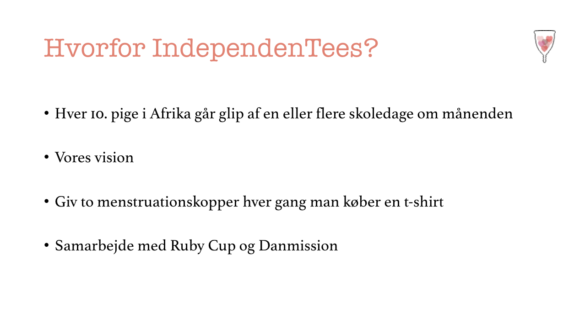

Tema 3 Grundlæggende UX
På dette tema skulle vi udarbejde en ide til en hjemmeside, der sælger t-shirts. Hertil var der forskellige opgaver, der blandt andet lød på at udarbejde skitser for at få en ide og finde frem til layoutet af sitet.
Ide


Jeg om lærte også om forskellige metoder som desk research, observations research, survey research og interview research. Ud fra inteview research fandt jeg bl.a. ud af, at brugeren har behov for at se t-shitsene fra forskellige vinkler, og at udtrykket skal være minimalitisk samt ligetil at handle online. På baggrund af disse informationer fik jeg et indtryk af hvordan designet og layouet til hjemmesiden skulle være. Hertil lavede jeg også moodboard og styletile, der blev brugt til at holde styr på stil og udtryk, som også var et godt redskab til at have overblik over diverse stilistiske beslutninger, der tages løbende.
Styletile

Moodboard
Jeg lærte også at udarbejde en prototype af sitet, der sælger t-shirts, hvoraf jeg andvendte testmetoden tænke-højt test. Resultaterne af testen gav andledning til diverse ændringer i prototypen som f.eks. en større brødtekst så det blev mere læsbart samt lidt mindre produktbeskrivelse, men mere konkret tekst ved de forskellige t-shirts.
Endelige protoype
Pitch
